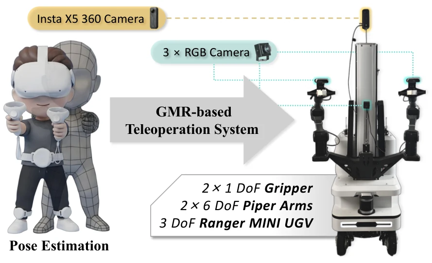
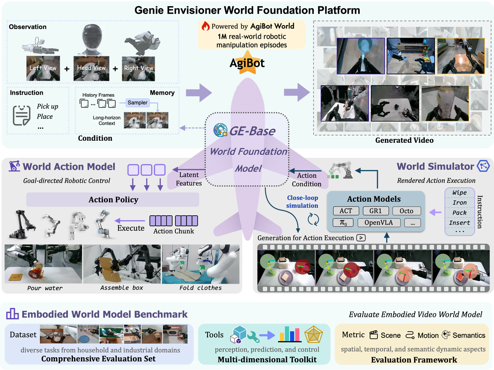
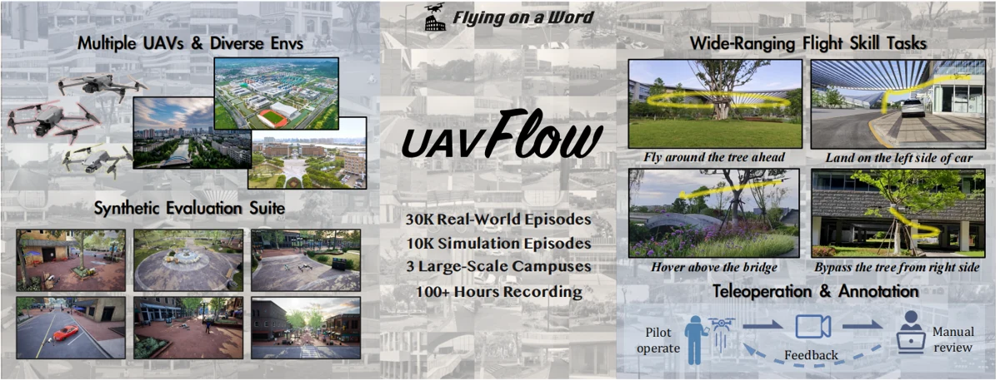
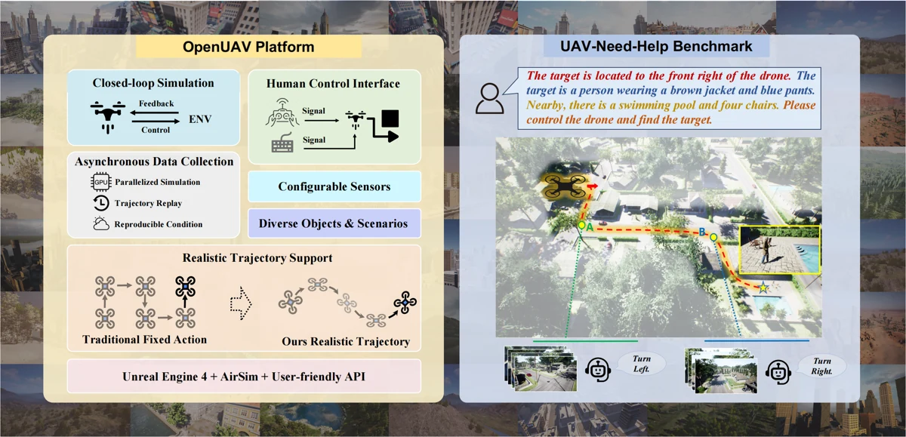
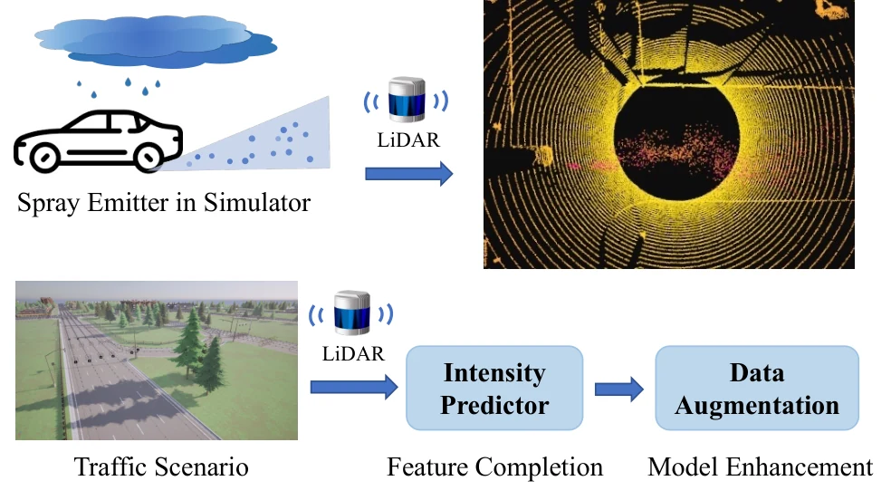
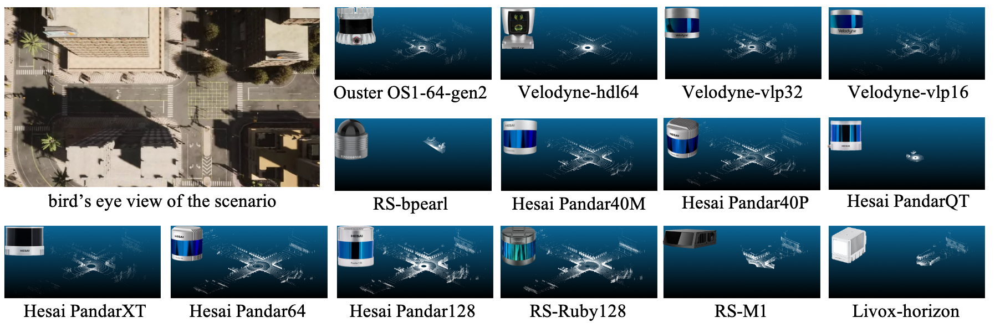

I am a Ph.D. student at Beihang University, advised by Prof. Ke Xu and Prof. Si Liu.
My research focuses on embodied intelligence and robot learning, with an emphasis on vision-language-action models, world models, and language-guided autonomous systems. My work spans mobile manipulation, UAV navigation and control, and realistic simulation for robust perception.
📝 Selected Publications
Showing all 6 publications

Donglin Yang, Haoran Chen, Xingyu Chen, Lixing Liu, Manyi Li, Changhe Tu, Ke Xu, Xiaojian Ma, Si Liu
arXiv 2026Robot learning & world models
A panorama-aware vision-language-action policy and whole-body teleoperation system support spatially grounded, coordinated mobile bimanual manipulation in real-world tasks.

Yue Liao*, Pengfei Zhou*, Siyuan Huang*, Donglin Yang, Shengcong Chen, Yuxin Jiang, Yue Hu, Jingbin Cai, Si Liu, Jianlan Luo, Liliang Chen, Shuicheng Yan, Maoqing Yao, Guanghui Ren
ICLR 2026Robot learning & world models
A unified video-generative foundation platform connects robotic world modeling and action learning to support instruction-driven manipulation across diverse embodiments.

Xiangyu Wang*, Donglin Yang*, Yue Liao*, Wenhao Zheng, Wenjun Wu, Bin Dai, Hongsheng Li, Si Liu
NeurIPS 2025Datasets & Benchmarks
A real-world benchmark and imitation learning framework enable language-conditioned, fine-grained UAV control through expert demonstrations, simulation evaluation, and real flight deployment.

Xiangyu Wang*, Donglin Yang*, Ziqin Wang*, Hohin Kwan, Jinyu Chen, Wenjun Wu, Hongsheng Li, Yue Liao, Si Liu
ICLR 2025Language-guided UAVs
A realistic UAV simulation platform, assistant-guided navigation benchmark, and multimodal navigation model connect language instructions with continuous flight trajectories.

Donglin Yang, Xinyu Cai, Zhenfeng Liu, Wentao Jiang, Bo Zhang, Guohang Yan, Xing Gao, Si Liu, Botian Shi
IROS 2024Simulation & 3D perception
Physics-based rain and vehicle spray simulation, paired with LiDAR intensity prediction, generates synthetic data for more robust autonomous driving perception.

Bo Zhang*, Xinyu Cai*, Jiakang Yuan, Donglin Yang, Jianfei Guo, Xiangchao Yan, Renqiu Xia, Botian Shi, Min Dou, Tao Chen, Si Liu, Junchi Yan, Yu Qiao
ICLR 2024Simulation & 3D perception
Reconstructing source-domain scenes and simulating target-domain LiDAR observations enables zero-shot 3D domain transfer across autonomous driving datasets and sensor configurations.
🎖 Honors and Awards
- Second Place Award (2/62), RoCo Challenge @ AAAI 2026: Robotic Collaborative Assembling for Human-Centered Manufacturing
- Third Place, 2026 World Humanoid Robot Games — Scenario-Based Events: Combined Five-Task Event
📖 Education
Beihang University
Ph.D. Student · Advised by Prof. Ke Xu and Prof. Si Liu